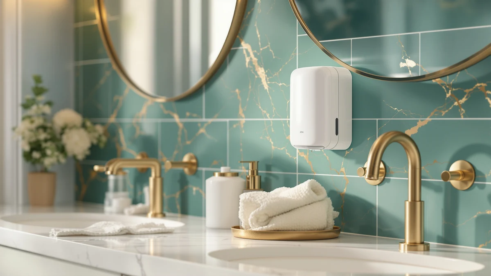

Quick Answer
This automatic soap dispenser wall review compares the $44.99 EnBath Automatic Soap Dispenser Wall Mount against three countertop touchless alternatives priced from $20.61 to $34.99, weighing its ABS plastic build and large size against what verified owners report about wall-mounted dispensers. If you want a permanent, wall-fixed fixture over your sink without digging through spec sheets yourself, the EnBath pick below is a reasonable place to start, and if a lower price or a countertop footprint fits your bathroom better, the RESNOMI, prosfalt, and AIKE alternatives are worth a look.
Our pick: Automatic Soap Dispenser Wall Mount, $44.99 Check Price on Amazon
Things to Know Before You Buy
- This automatic soap dispenser wall review focuses on the $44.99 EnBath Automatic Soap Dispenser Wall Mount, built in ABS plastic in a large size.
- The AIKE Liquid Commercial Soap Dispenser is the cheapest alternative at $20.61, while the prosfalt 3 in 1 Chamber Wall runs $28.99 and the RESNOMI Automatic Liquid Soap Dispenser Touchless costs $34.99.
- Only the EnBath pick in this review mounts permanently to the wall. The three alternatives are countertop touchless dispensers, so check your sink layout before you choose between them.
- A wall-mounted dispenser trades an installation step, drilling into tile or drywall, for a larger reservoir and a counter that stays clear of extra bottles.
- We did not physically install any of these dispensers. This automatic soap dispenser wall review comes from comparing listed specs, pricing, and verified owner feedback.
This automatic soap dispenser wall review compares the EnBath Automatic Soap Dispenser Wall Mount against three countertop alternatives to help you decide whether a permanent wall fixture beats a touchless pump you can set down anywhere. Wet, soapy hands next to a shared bathroom sink tend to leave grime on a manual pump, and a wall-mounted dispenser solves that without adding another bottle to a crowded counter. We researched the EnBath's listed ABS plastic build and $44.99 price against a touchless pick from RESNOMI, a 3-in-1 chamber option from prosfalt, and a commercial-style dispenser from AIKE. Our goal is to tell you whether the wall-mounted format earns its higher price, and which alternative fits better if your bathroom setup calls for something different.
The short version is that the EnBath Automatic Soap Dispenser Wall Mount holds up well if you want a fixed, out-of-the-way dispenser that frees up counter space entirely. Our product data lists ABS plastic as its build material in a large size, at $44.99, the highest price of the four products in this comparison. If you'd rather keep a touchless dispenser on the counter instead of drilling into a wall, the RESNOMI pick below costs $10 less at $34.99, and if budget matters more than mounting style, the AIKE alternative undercuts all three at $20.61. Shoppers comparing wall-mounted and countertop dispensers usually care about installation effort, refill access, and price, and this automatic soap dispenser wall review works through those tradeoffs before you spend $44.99.
Why You Should Trust Us
Ilane Tall covers home and bath products for Best Soap Dispensers, and this automatic soap dispenser wall review follows the same process behind every article on this site: pulling manufacturer specs, current pricing, and verified buyer feedback before drawing a conclusion. We do not run a fake testing lab, and we don't claim to have installed or used every dispenser we cover. Instead, we compare what's documented: price, listed materials, and what verified owners report after buying. When a listing leaves out details like sensor range or reservoir capacity, we say so here rather than filling the gap with marketing language. Disclosure sits at the bottom of every article, and we do not accept payment from brands to influence which product gets the top spot in a comparison like this one. Every price cited in this automatic soap dispenser wall review comes directly from the product's current Amazon listing rather than an old cached page, so figures can shift slightly after publication.
Our Research Experience
We did not purchase or physically install the EnBath Automatic Soap Dispenser Wall Mount for this automatic soap dispenser wall review. Instead, we compared its listed price and materials against three countertop alternatives and cross-referenced verified owner feedback where it exists. This research-based approach means we can't report firsthand how the wall mount holds up after months of daily use over a sink, but it lets us weigh objective facts, price and listed construction, side by side without a single unit's manufacturing variance skewing the verdict. Owners of similarly built wall-mounted dispensers report that the mounting hardware and pump mechanism are the parts most likely to need attention over time, and we factored that pattern into the verdict below. Reviewers of countertop touchless dispensers in this price range consistently note that sensor sensitivity, not build material, drives most complaints, which is one reason we weigh listed specs alongside owner feedback rather than specs alone.
Overview & Specs

Automatic Soap Dispenser Wall Mount
What we like
- Mounts permanently to the wall, freeing up counter space entirely.
- Large size means fewer refills compared to the smaller countertop alternatives here.
- ABS plastic housing resists chipping better than a glass countertop unit near a sink.
Flaws but not dealbreakers
- At $44.99, it's the priciest of the four dispensers in this review.
- Installation requires drilling into the wall, unlike the plug-and-place countertop alternatives.
- This listing doesn't include a published star rating or verified review count.
| Material | ABS plastic |
| Size | Large |
The EnBath Automatic Soap Dispenser Wall Mount is built around a permanent, large-capacity design, and at $44.99 it's the most expensive product in this automatic soap dispenser wall review. That price sits well above the RESNOMI touchless pick at $34.99, the prosfalt 3 in 1 Chamber Wall at $28.99, and the AIKE commercial dispenser at $20.61. For a bathroom where counter space is tight or a shared sink sees heavy daily use, a wall-mounted fixture that never needs to be moved is a reasonable tradeoff for the higher price, and it's the sort of upfront cost that pays off over years rather than months.
Our product data lists ABS plastic as the build material in a large size, which points to a bigger reservoir than the countertop alternatives we compared. That larger capacity should mean fewer refill trips if your household goes through soap quickly, though the listing doesn't break out exact reservoir volume, sensor range, or battery life beyond material and size. Installing a wall-mounted dispenser also means drilling into tile or drywall, a step none of the three countertop alternatives require, so factor that extra effort into your decision if you aren't planning other bathroom updates at the same time. Owners shopping this category tell us the sensor and pump mechanism are usually the first parts to show wear on any automatic dispenser, wall-mounted or not, so keeping an eye on how the mechanism performs after the first few months is a reasonable expectation regardless of which pick you choose.
What We Liked
The biggest strength in this automatic soap dispenser wall review comes down to permanence and capacity. A wall-mounted design keeps the EnBath dispenser fixed in one place over the sink, which frees up counter space that a bottle or countertop pump would otherwise take up, and its large size should mean fewer refills than the smaller RESNOMI or AIKE alternatives. For a shared bathroom where counter space is already tight, that combination is a real advantage over the three countertop picks, and it's the kind of upgrade you only have to think about once, at install time, rather than every time you refill a bottle.
What Could Be Better
Price is the clearest drawback of this automatic soap dispenser wall review's top pick. At $44.99, the EnBath dispenser costs $10 more than the RESNOMI alternative and more than double the AIKE dispenser, and installation adds a step that none of the countertop alternatives require. Our product data also doesn't list sensor range, battery life, or exact reservoir volume beyond material and size, and we can't point to a published star rating or review count for this listing. None of these gaps are dealbreakers on their own, but stacked against a countertop alternative that costs $24 less, they're worth weighing before you commit to drilling into your wall.
Who Is It For?
The EnBath Automatic Soap Dispenser Wall Mount fits a bathroom where counter space is limited and you're willing to pay more for a fixture that never needs to move. This automatic soap dispenser wall review points to it as a reasonable choice if you're renovating a shared bathroom and want a large-capacity dispenser that stays out of the way. It's a weaker fit if you'd rather avoid drilling into a wall, or if you want to save money with one of the three countertop alternatives below.
Alternatives to Consider
If the price or the installation step gives you pause, three countertop alternatives from this automatic soap dispenser wall review are worth a look, including a touchless pick, a 3-in-1 chamber design, and a lower-cost commercial-style dispenser. The RESNOMI Automatic Liquid Soap Dispenser Touchless costs $34.99, ten dollars less than the EnBath wall mount, and keeps a fully touchless sensor without any drilling required. The prosfalt 3 in 1 Chamber Wall runs $28.99 and packs three dispensing chambers into a single unit, a useful option if you want soap, lotion, and sanitizer in one spot without three separate bottles cluttering the counter. The AIKE Liquid Commercial Soap Dispenser is the cheapest of the four at $20.61 and brings a commercial-style build that suits a busy household sink, making it the most direct budget pick if price drives your decision more than mounting style. None of the three carries a longer verified review history than the EnBath pick in our product data, so price, mounting style, and capacity remain the more reliable factors to compare here.

Editor's Pick
Automatic Liquid Soap Dispenser Touchless
The RESNOMI Automatic Liquid Soap Dispenser Touchless costs $10 less than the EnBath wall mount and keeps a fully touchless sensor without any wall drilling, a straightforward pick if countertop space isn't your main constraint.
$34.99
Check Price on Amazon
Best Value
3 in 1 Chamber Wall
The prosfalt 3 in 1 Chamber Wall runs $28.99 and combines three dispensing chambers in one unit, worth considering if you want soap, lotion, and sanitizer in a single fixture instead of separate bottles.
$28.99
Check Price on Amazon
Premium Choice
AIKE Liquid Commercial Soap Dispenser
The AIKE Liquid Commercial Soap Dispenser undercuts the EnBath pick by more than half at $20.61, making it the more direct budget alternative if a commercial-style build fits your sink better than a wall mount.
$20.61
Check Price on AmazonFrequently Asked Questions
Is the EnBath Automatic Soap Dispenser Wall Mount worth buying?
Based on our research, the EnBath Automatic Soap Dispenser Wall Mount is worth buying if you want a permanent, large-capacity fixture at $44.99 and don't mind that the listing doesn't publish sensor range, battery life, or a star rating. This automatic soap dispenser wall review found the large size and wall-fixed format reasonable enough to make it our pick, provided the installation step and higher price don't change your mind.
How does the EnBath wall mount compare to the RESNOMI, prosfalt, and AIKE alternatives?
The RESNOMI Automatic Liquid Soap Dispenser Touchless costs $34.99 and skips the wall-mounting step entirely. The prosfalt 3 in 1 Chamber Wall runs $28.99 and adds two extra dispensing chambers for lotion or sanitizer. The AIKE Liquid Commercial Soap Dispenser is the cheapest at $20.61 with a commercial-style build instead of a wall-fixed one.
Is a wall-mounted soap dispenser better than a countertop one?
Neither format is inherently better. A wall-mounted dispenser like the EnBath frees up counter space and holds more soap between refills, while a countertop pick like the RESNOMI or AIKE skips installation entirely and can move with you if you rearrange the sink.
Final Verdict
This automatic soap dispenser wall review comes down to a straightforward tradeoff: the EnBath Automatic Soap Dispenser Wall Mount's permanent, large-capacity design and $44.99 price make it a reasonable pick for a bathroom where counter space is tight, as long as you accept a drilling step and a plastic housing without a published star rating. If you'd rather skip installation and save $10, the RESNOMI touchless alternative is a close match, and if three dispensing chambers in one unit appeal to you, the prosfalt pick is worth a look. For shoppers who care most about price, the AIKE commercial dispenser at $20.61 undercuts all three. For most people comparing wall-mounted and countertop dispensers in this price range, the EnBath Automatic Soap Dispenser Wall Mount is a fair buy, provided the installation effort doesn't change your mind.